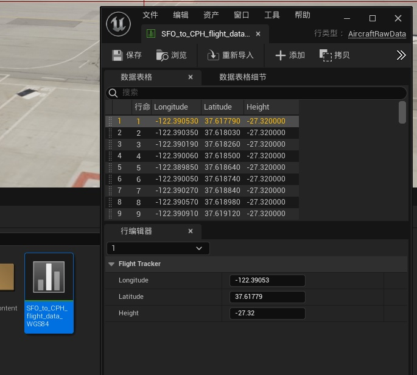
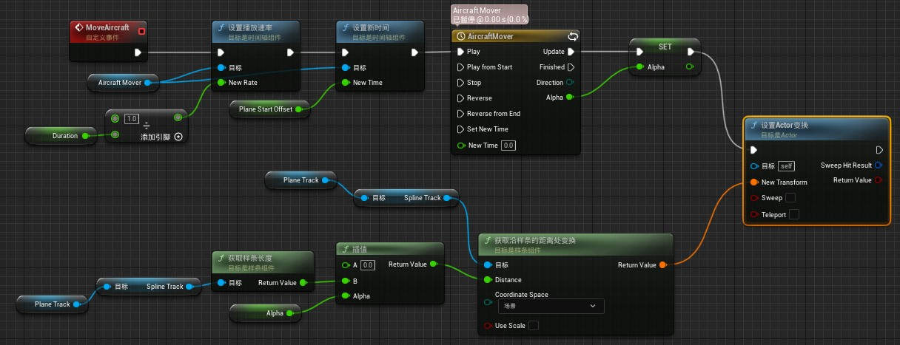
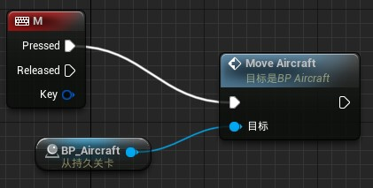
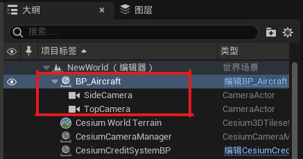

第一步：创建一个关卡
- 创建一个空的 Unreal 关卡；
- 登录 Cesium ion 并添加 Cesium World Terrain 和 CesiumSunSky；
- 设置 CesiumGeoreference 的坐标为 San Francisco International Airport (SFO)；
Origin Latitude = 37.61779
Origin Longitude = -122.390533
Origin Height = 0.0
第二步：添加 PlaneTrack 类
-
在 UE Editor 中添加 C++ 类，选择 Actor 作为父类，点击【下一步】，输入类名 PlaneTrack，点击【创建类】按钮，此时 Visual Studio 会自动打开，如果没有打开，可以通过【工具】——【打开Visual Studio】手动打开项目

VS 2022 解决方案类似下图：

-
添加下面的代码到 project.Build.cs 文件：
// Add Cesium for Unreal plugin dependency path PrivateDependencyModuleNames.AddRange(new string[] { "CesiumRuntime" }); // Tell Unreal Engine to use C++17 CppStandard = CppStandardVersion.Cpp17;
-
在 PlaneTrack 类中添加一些变量，用来存储数据、样条曲线和坐标转换，并添加必要的头文件：
... // Add import paths. Make sure they go above the PlaneTrack.generated.h line #include "Components/SplineComponent.h" #include "CesiumGeoreference.h" #include "Engine/DataTable.h" ... public: // Spline variable to represent the plane track UPROPERTY(BlueprintReadOnly, Category = "FlightTracker") USplineComponent* SplineTrack; // Cesium class that contain many useful coordinate conversion functions UPROPERTY(EditAnywhere, Category = "FlightTracker") ACesiumGeoreference* CesiumGeoreference; // An Unreal Engine data table to store the raw flight data UPROPERTY(EditAnywhere, Category = "FlightTracker") UDataTable* AircraftsRawDataTable; -
打开 PlaneTrack.cpp 文件，在构造函数中初始化 SplineTrack 变量；
APlaneTrack::APlaneTrack() { // Set this actor to call Tick() every frame. You can turn this off to improve performance if you don't need it. PrimaryActorTick.bCanEverTick = true; // Initialize the track SplineTrack = CreateDefaultSubobject<USplineComponent>(TEXT("SplineTrack")); // This lets us visualize the spline in Play mode SplineTrack->SetDrawDebug(true); // Set the color of the spline SplineTrack->SetUnselectedSplineSegmentColor(FLinearColor(1.f, 0.f, 0.f)); }CesiumGeoreference 和 AircraftsRawDataTable 变量将在 Unreal Engine Editor 中进行设置
-
编译
在 UE4 Editor 中，可以点击【编译】按钮，但是 UE5 Editor 并未找到此工具按钮

UE5 中可以通过两种方式进行编译：
- 通过 VS 启动本地调试，会打开一个 UE Editor，但停止调试后，UE Editor 也会退出。注意：此时工程不能是被 UE Editor 打开的状态，否则会报如下错误
UnrealBuildTool : error : Unable to build while Live Coding is active. Exit the editor and game, or press Ctrl+Alt+F11 if iterating on code in the editor or game

- 通过 Ctrl+Alt+F11 快捷键在 Editor 或 game 中进行代码迭代热编译

- 通过 VS 启动本地调试，会打开一个 UE Editor，但停止调试后，UE Editor 也会退出。注意：此时工程不能是被 UE Editor 打开的状态，否则会报如下错误
第三步：导入真实的飞行数据
下载真实的飞行点位数据
为了使 PlaneTrack 类能访问数据并执行坐标转换，我们将使用虚幻引擎的 DataTable 来存储项目内部的数据。在这一步中，我们将创建一个数据结构来表示飞行数据的结构。
-
在 PlaneTrack.h 文件中，将下面的代码直接插入到类的外面，用来定义航班数据库结构；
USTRUCT(BlueprintType) struct FAircraftRawData : public FTableRowBase { GENERATED_USTRUCT_BODY() public: FAircraftRawData() : Longitude(0.0) , Latitude(0.0) , Height(0.0) {} UPROPERTY(EditAnywhere, Category = "FlightTracker") double Longitude; UPROPERTY(EditAnywhere, Category = "FlightTracker") double Latitude; UPROPERTY(EditAnywhere, Category = "FlightTracker") double Height; };该结构包含三个成员变量：Longitude、Latitude和Height。这些变量对应于上面原始数据表中的列名。还要注意，该结构继承自 FTableRowBase
注意：编译代码
-
将 .csv 数据文件拖放到虚幻引擎内容浏览器中。在【选择DataTable的行类型】下拉菜单中选择 AircraftRawData


第四步：在飞行轨迹上添加点位
-
在 PlaneTrack.h 文件中添加下面的包含文件：
// Imports should be placed above the PlaneTrack.Generated.h line. ... #include <glm/vec3.hpp> #include "CesiumGeospatial/Ellipsoid.h" #include "CesiumGeospatial/Cartographic.h"在 APlaneTrack 类的最后添加下面的方法，用来将数据表中的数据添加到样条曲线的点位：
public: // Function to parse the data table and create the spline track UFUNCTION(BlueprintCallable, Category = "FlightTracker") void LoadSplineTrackPoints(); -
在 PlaneTrack.cpp 中添加 LoadSplineTrackPoints 方法的函数体；
void APlaneTrack::LoadSplineTrackPoints() { if (this->AircraftsRawDataTable != nullptr && this->CesiumGeoreference != nullptr) { int32 PointIndex = 0; for (auto& row : this->AircraftsRawDataTable->GetRowMap()) { FAircraftRawData* Point = (FAircraftRawData*)row.Value; // Get row data point in lat/long/alt and transform it into UE4 points double PointLatitude = Point->Latitude; double PointLongitude = Point->Longitude; double PointHeight = Point->Height; // Compute the position in UE coordinates glm::dvec3 UECoords = this->CesiumGeoreference->TransformLongitudeLatitudeHeightToUnreal(glm::dvec3(PointLongitude, PointLatitude, PointHeight)); FVector SplinePointPosition = FVector(UECoords.x, UECoords.y, UECoords.z); this->SplineTrack->AddSplinePointAtIndex(SplinePointPosition, PointIndex, ESplineCoordinateSpace::World, false); // Get the up vector at the position to orient the aircraft const CesiumGeospatial::Ellipsoid& Ellipsoid = CesiumGeospatial::Ellipsoid::WGS84; glm::dvec3 upVector = Ellipsoid.geodeticSurfaceNormal(CesiumGeospatial::Cartographic(FMath::DegreesToRadians(PointLongitude), FMath::DegreesToRadians(PointLatitude), FMath::DegreesToRadians(PointHeight))); // Compute the up vector at each point to correctly orient the plane glm::dvec4 ecefUp(upVector, 0.0); const GeoTransforms& geoTransforms = this->CesiumGeoreference->GetGeoTransforms(); const glm::dmat4& ecefToUnreal = geoTransforms.GetEllipsoidCenteredToAbsoluteUnrealWorldTransform(); glm::dvec4 unrealUp = ecefToUnreal * ecefUp; this->SplineTrack->SetUpVectorAtSplinePoint(PointIndex, FVector(unrealUp.x, unrealUp.y, unrealUp.z), ESplineCoordinateSpace::World, false); PointIndex++; } this->SplineTrack->UpdateSpline(); } }保存并编译工程
-
在场景中添加 PlaneTrack Actor；

-
选中添加的 PlaneTrack1 Actor，打开【细节】面板，设置 Cesium Georeference 和 Aircrafts Raw Data Table

-
打开【关卡蓝图】,将 PlaneTrack1 Actor 拖入到蓝图中，获取 Spline Track 对象，并添加【清除样条点】节点，当样条第一次添加到场景中时，默认情况下它有两个点。这两个点是任意的，我们不需要，因此可以使用 Clear Spline points 清除它们。
-
添加 Load Spline Track Points 节点，最终蓝图连接如下图：

由于样条可视化在默认情况下是关闭的，可以通过在控制台命令窗口输入
ShowFlag.Splines 1命令来打开它，运行后如下图：
第五步：添加飞机模型
模型下载网站：
-
导入模型为静态网格模型
建议每个模型创建一个文件夹，在【内容浏览器】面板新建模型文件夹，然后在新建的文件夹中右击鼠标，在弹出的快捷菜单中选择【导入】

-
添加蓝图类 BP_Aircraft，该类将包含飞机静态网格模型，以及沿着样条曲线路径移动飞机的逻辑
-
在 BP_Aircraft 蓝图类中添加【静态网格体】组件，并指定【静态网格体】为导入的飞机模型

-
在该蓝图类的【事件图表】中添加【自定义事件】并命名为 MoveAircraft
-
在【事件图表】中添加【时间轴】节点并命名为 AircraftMover，这个时间轴将随时间移动飞机模型

将时间轴的 Alpha 输出引脚提升为变量 Alpha
-
双击时间轴节点，打开【时间轴编辑器】，添加浮点型轨道，添加两个关键帧，时间 = 0，值 = 0，时间 = 1， 值 = 1，勾选【使用最后一个关键帧】

-
添加几个公有变量：
- Duration，float 类型，public 权限，这个变量将用于确定飞机沿路径飞行所需的时间
- AircraftStartOffset，float 类型，public 权限，用于确定飞行在时间轴上的哪个位置开始，取值区间为从 0 到 1
- PlaneTrack：
PlaneTrack对象引用类型，public 权限，用于存储 PlaneTrack 对象的引用，以检索样条曲线上的点位

-
如下图连接 MoveAircraft 自定义事件蓝图：

-
通过样条曲线类 PlaneTrack 插值飞机飞行点位，如下图：

-
最后连接到【设置Actor变换】节点：

-
编译保存，并把 BP_Aircraft 蓝图类放入到场景中
-
在关卡蓝图中添加键盘事件，调用 BP_Aircraft 的 MoveAircraft 自定义事件节点

-
在场景中选中 BP_Aircraft Actor，在细节面板中设置 Duration、PlaneTrack、AirplaneOffset

第六步：在两个不同的相机视图间切换
-
在 BP_Aircraft 蓝图类节点下添加两个相机，分别放置在飞机模型的顶部和侧边

-
在关卡蓝图中添加两个快捷键事件，并如下图连接节点

参考：